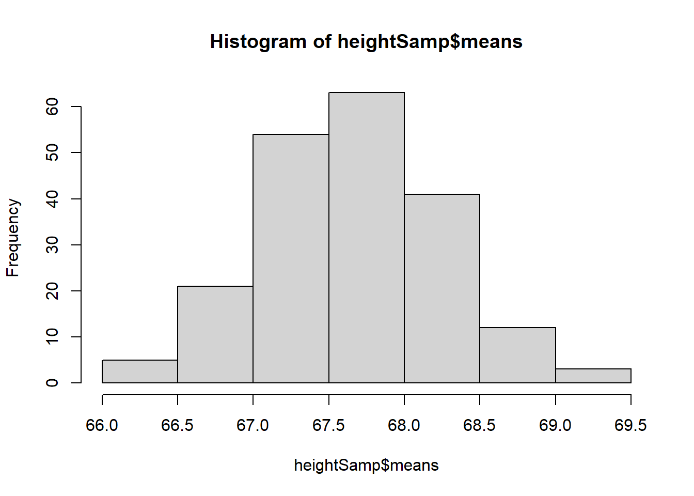
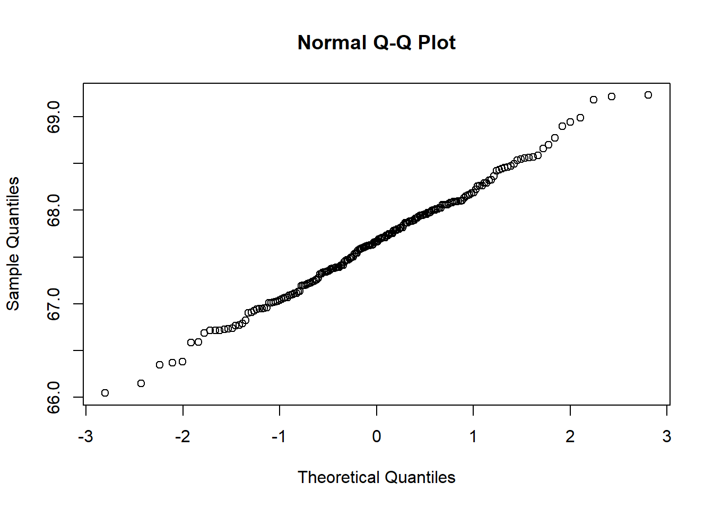
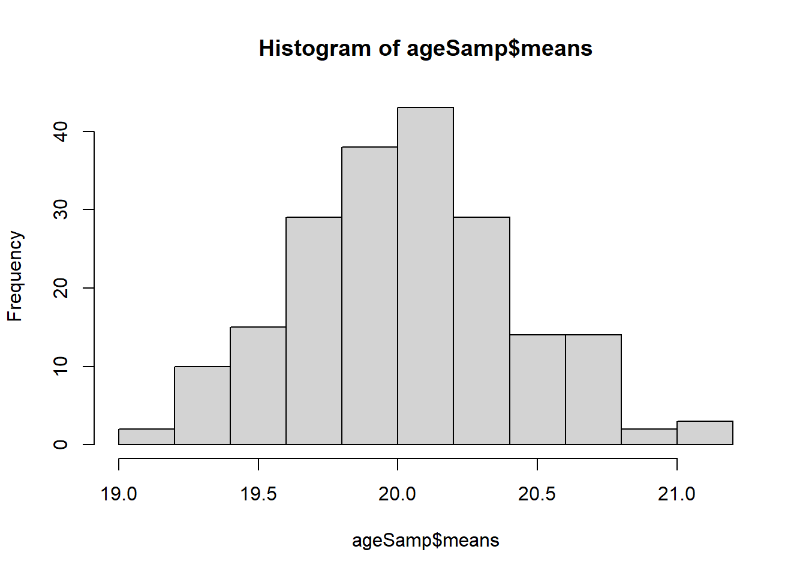
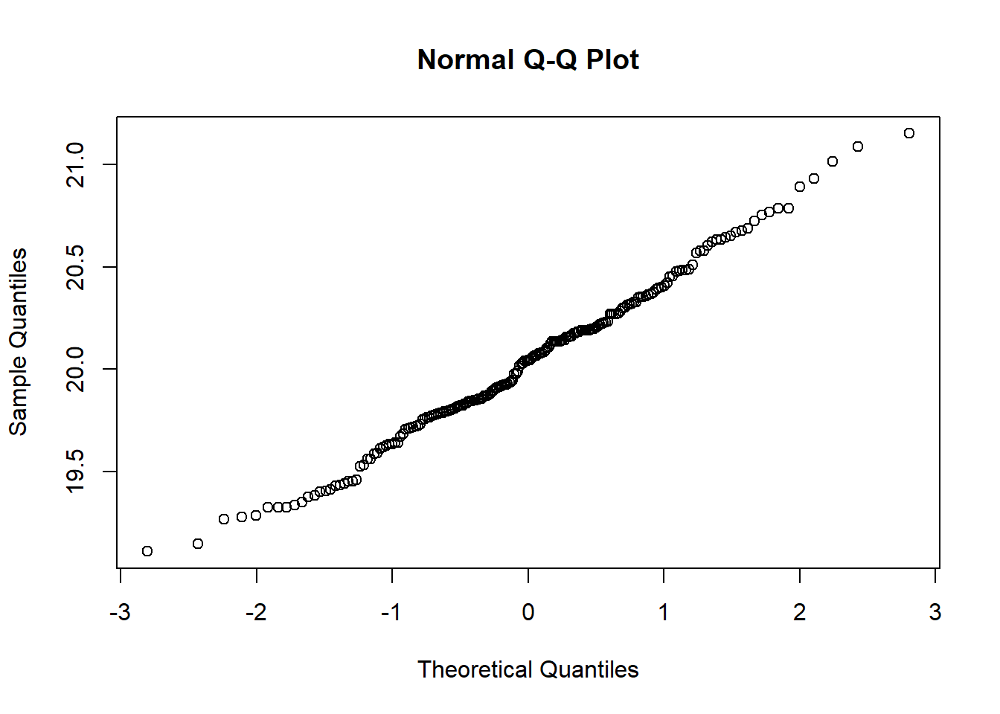
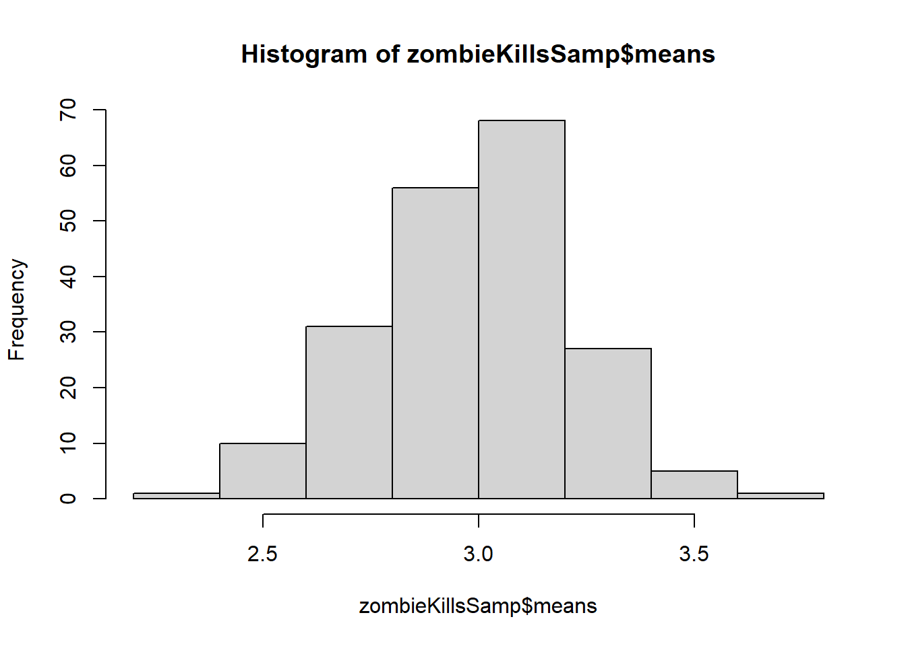

For this first challenge we will be conducting statistics on the run-time of minutes for movies made between 1920 to 1979
Step 1: Load in Libraries and Data
For this challenge, we will be using functions from the {tidyverse} and {mosaic} packages, so we will load them in now along with the IMDB-movies dataset
Step 2: Filter Movies Based on Length and Release Year
Next we need to narrow down our list of movies. We will do this by calling the filter function to select movies with startYear values of 1920-1979 and then filter based on runtimeMinutes for movies which are 60 to 180 minutes (1 to 3 hours). After that, we want to assign a decade designation to each movie. We will be this by using the case_when() function within the mutate() function. The case_when() function will assign movies a specific decade designation based on when they were released. As a result, we get a dataset (d2) with 5,651 movies
Now we will do some initial visualization of our data. We will use ggplot() to create histograms which, using facet_wrap(), will show the distribution of runtimeMinutes for each decade.
Step 4: Calculate Population Mean and Standard Deviation
For later comparison, we will measure the mean and standard deviation for runtimeMinutes per decade and save it in a data frame called “results”. This will utilize the group_by() and summarise() functions to group observations based on matching decade values before summarizing the mean and standard deviations for runtimeMinutes
Next, we will take a sample of 100 movies from each decade and calculate the mean and standard deviation of runtimeMinutes for each decade’s sample of 100 movies. Rather than rewrite the same code for each decade, I created a function which will take our d2 data set, the value of the decade to sample from, and the variable we want to measure (runtimeMinutes). The final argument is the number of samples we want to pull from the data set based on the other arguments.
Step 6: Calculate the Standard Error Based on Sample Population Mean
Next we need to calculate the standard error of the population’s mean runtimeMinutes based on the standard deviation from our sample of 100 movies. To do this, I created another function which takes the data set we want and the standard deviation variable in the data set to calculate the standard error. I then use the mutate() function to add a third column (runTimeSE) to each decades data frame holding these metrics. Each data frame now has 3 variables, runTimeMean, runTimeSD, and runTimeSE
Step 7: Compare Estimates of Population runtimeMinutes with the Sample of 100
Below is a table listing the population and sample measurements of mean and standard deviation along with the sample standard error we calculated in step 6 . The means and standard deviation of the population are fairly similar, with some variation in each decade. The standard error is low for each decade, indicating they are good estimates of the population. I used the following to calculate the population standard error: sd/sqrt(100)
Now, we shall create a sampling distribution based on runtimeMinutes which will pull 1000 random samples of 100 movies from each decade without replacement. From this sample distribution we will calculate the mean and standard deviation for each sample pulled. To do this I created a function which takes the data set (d2), variable (runtimeMinutes), decade (20s, 30s, etc), sample repetitions (1000), and the number of movies to be pulled with each sample (100). I use a for() loop in this function to do each iteration of the sampling distribution. Originally, I tried using the do() function from {mosaic} but this resulted in each sample in the distribution having the same mean and standard deviation, which did not seem right haha.
sampMetricsDecade <-function(df, variable, decadeVal, sampReps, sampNum){ data <-filter(df, decade == decadeVal) sampDistMean <-as.numeric(sampReps) sampDistSD <-as.numeric(sampReps)for(i in1:sampReps){ sample <-slice_sample(data, n = sampNum) sampDistMean[i] <-mean(sample[[variable]]) sampDistSD[i] <-sd(sample[[variable]]) }print(paste("Mean and standard deviation for", sampReps, "random samples of", sampNum, "survivors is in dataframe!"))return(data.frame(means = sampDistMean, standard_deviation = sampDistSD))}d20samp <-sampMetricsDecade(d2, "runtimeMinutes", "20s", 1000, 100)
[1] "Mean and standard deviation for 1000 random samples of 100 survivors is in dataframe!"
[1] "Mean and standard deviation for 1000 random samples of 100 survivors is in dataframe!"
Step 9: Calculate Mean and Standard Deviation of the Sampling Distribution and Plot Sampling Distribution
Finally in our analysis, we will calculate the mean and standard deviation of the sampling distribution we generated. I will do this by passing the mean variable though a function I made to calculate the mean and standard deviation of the sampling distributions. The standard deivation of the sample distribution means gives us our standard error for the sampling distribution. Then, to visualize our data, we will plot histograms of the distribution of the means in the sampling distribution. These all have a shape associated with a normal distribution.
Step 10: Comparing The Population, Sample, and Sampling Distribution
Below I have the standard error for each decade’s sample, population, and sample distribution. The sample distribution standard error is generally lower than the sample standard error (except for the 70s), suggesting that the sample distribution is a more accurate estimate of the population.
Decade
SampleSE
PopSE
SampleDistSE
20s
2.71
2.62
1.55
30s
1.86
1.72
1.6
40s
1.76
1.91
1.76
50s
1.87
1.92
1.81
60s
2.26
2.12
2.01
70s
1.72
1.79
1.79
Challenge 2: Sampling Zombie Survivors
In this next challenge, we will analyze the quantitative measures for a group of zombie apocalypse survivors!
Step 1: Load in Libraries and Data
We will first load in the libraries we need for this analysis, {tidyverse}, {ggplot2}, and {mosaic}. Next we will load in the zombies.csv data set and name it “z”
Now we will calculate the mean and standard deviation of the population for all the quantitative measure in the file (height, weight, age, number of zombies killed, and years of education). We cannot use the sd() function to calculate the standard deviation since we are looking at the whole population here. Instead we will use the equation sqrt((n-1)/n)*sd(variable) where n is the total length of the variable in the data set, which is 1000 in this case.
To visualize each of these variables, we ill use ggplot() to create boxplots of each variable based on gender.
#Heightggplot(data = z, mapping =aes(x = gender, y = height))+geom_boxplot() +ggtitle("Height by Gender")
#Weightggplot(data = z, mapping =aes(x = gender, y = weight))+geom_boxplot() +ggtitle("Weight by Gender")
#Ageggplot(data = z, mapping =aes(x = gender, y = age))+geom_boxplot() +ggtitle("Age by Gender")
#Number of Zombies killedggplot(data = z, mapping =aes(x = gender, y = zombies_killed))+geom_boxplot() +ggtitle("Zombie Kills by Gender")
#Years of educationggplot(data = z, mapping =aes(x = gender, y = years_of_education))+geom_boxplot() +ggtitle("Years of Education by Gender")
Step 4: Scatterplots of Height and Weight by Gender
Now we will again use ggplot() to plot the distribution of height based on age and weight based on age by gender in scatterplots. Based on the plots, height and age seem to have a positive relationship in that as age increases height increases steadily. Weight in relation to age though seems to be a bit more randomly distributed, with some younger individual weighing more than older ones and vice-a-versa.
#Height and ageggplot(data = z, mapping =aes(x = age, y = height, color = gender)) +geom_point() +ggtitle("Height in relation to Age")
#Weight and ageggplot(data = z, mapping =aes(x = age, y = weight, color = gender)) +geom_point() +ggtitle("Weight in relation to Age")
Step 5: Create Histograms and QQ Plots
We will not use the hist() and qqnorm() functions to create histograms and QQ plots of each variable of interest. Based on these plots, height, weight and age appear to be normally distributed while number of zombie kills and years of education are not.
#Heighthist(z$height) #looks normal
qqnorm(z$height) #normal
#Weighthist(z$weight) #normal
qqnorm(z$weight) #normal
#Agehist(z$age) #normal
qqnorm(z$age) #normal
#Zombie Killshist(z$zombies_killed) #not normal
qqnorm(z$zombies_killed) #not normal
#Years of Educationhist(z$years_of_education) #not normal
qqnorm(z$years_of_education) #not normal
Step 6: 50 Survivor Sample
Now we will take a sample of 50 survivors and calculate the mean, standard deviation, standard error, and 95% confidence intervals of this sample for each variable. First we will use the slice_sample() function to create a sample data set of 50 survivors. Then we will pass this sample through a function I made which will calculate the values we want from this sample of 50.
Now we will draw 199 random sample of 50 survivors to create a sampling distribution which with out initial sample will result in a distribution of 200 means. We will then calculate the means and standard deviations of the sampling distribution for each variable.
sampMetrics <-function(df, variable, sampReps, sampNum){ sampDistMean <-vector() sampDistSD <-vector()for(i in1:sampReps){ sample <-slice_sample(df, n = sampNum) sampDistMean[i] <-mean(sample[[variable]]) sampDistSD[i] <-sd(sample[[variable]]) }print(paste("Mean and standard deviation for", sampReps, "random samples of", sampNum, "survivors is in dataframe!"))return(data.frame(means = sampDistMean, standard_deviation = sampDistSD))}heightSamp <-sampMetrics(z, "height", 199, 50)
[1] "Mean and standard deviation for 199 random samples of 50 survivors is in dataframe!"
heightSampMMSE <-summarise(heightSamp, MM =mean(means), SE =sd(means))weightSamp <-sampMetrics(z, "weight", 199, 50)
[1] "Mean and standard deviation for 199 random samples of 50 survivors is in dataframe!"
weightSampMMSE <-summarise(weightSamp, MM =mean(means), SE =sd(means))ageSamp <-sampMetrics(z, "age", 199, 50)
[1] "Mean and standard deviation for 199 random samples of 50 survivors is in dataframe!"
ageSampMMSE <-summarise(ageSamp, MM =mean(means), SE =sd(means))zombieKillsSamp <-sampMetrics(z, "zombies_killed", 199, 50)
[1] "Mean and standard deviation for 199 random samples of 50 survivors is in dataframe!"
zombieKillSampMMSE <-summarise(zombieKillsSamp, MM =mean(means), SE =sd(means))educationSamp <-sampMetrics(z, "years_of_education", 199, 50)
[1] "Mean and standard deviation for 199 random samples of 50 survivors is in dataframe!"
educationSampMMSE <-summarise(educationSamp, MM =mean(means), SE =sd(means))
The following mean and standard deviation values are based on the most recent run of this function on 2/27
For all of my variables, compared to the first sample of 50, the standard deviations for the sampling distributions are similar to the standard error calculated for the first sample of 50 with very little variation. The table below summarizes the mean, standard deviation, and standard error for the sample of 50 along with the range of means, mean of the means, standard deviation range, and standard deviation of the means (standard error) of the sample distribution. The values for the sample mean and standard deviation fall within the range in the sampling distribution while the standard error of both the sample and sampling distribution are similar to each other.
Variable
50SampMean
50SampSD
50SampSE
DistMeanRange
DistMeanMean
DistSDRange
DistSE
Height
67.72
4.14
0.57
66.47-69.11
67.6
2.65-5.32
0.56
Weight
140.78
18.36
2.60
137.33-150.66
144
13.4-23.7
2.44
Age
19.25
2.54
0.36
19-21.29
20.1
2.23-3.87
0.39
Zombie Kills
2.46
1.55
0.22
2.36-3.7
3.02
1.3-2.25
0.26
Years of Education
2.94
1.75
0.25
2.36-3.96
3.03
1.33-2.12
0.26
Step 8: Plot Sampling Distribution
We will not use the hist() function to plot the sampling distributions for each variable. Based on these histograms, all the variables appear to be fairly normally distributed. Height and weight seem to be weighted towards the right and left respectively but follow a bell curve looking pattern associated with normal distributions. The number of zombie kills and years of education appear now to be normally distributed compared to when we first plotted them.
hist(heightSamp$means)

qqnorm(heightSamp$means)

#weighthist(weightSamp$means)
qqnorm(weightSamp$means)
#agehist(ageSamp$means)

qqnorm(ageSamp$means)

#zombie killshist(zombieKillsSamp$means)

qqnorm(zombieKillsSamp$means)
#years of educationhist(educationSamp$means)
qqnorm(educationSamp$means)
Step 9: Create Confidence Intervals
Now we will construct 95% confidence intervals around the sampling distributions. I did this by first creating a function which takes the data we are working with (each sampling distribution) and the name of the column we want to analyse (means) as arguments. The confidence intervals of our sampling distribution are similar to those calculated for our single sample of 50 survivors:
Sample Height CI: 66.43, 68.74; Sample Distribution Height CI: 66.5, 68.7
Sample Weight CI: 136.91, 148.14; Sample Distribution Weight CI: 138, 149
Sample Age CI: 19.33, 20.98; Sample Distribution Age CI: 19.2, 20.9
Sample Zombie Kills CI: 2.4, 3.56; Sample Distribution Zombie Kills CI: 2.52, 3.46
Sample Education Years CI: 2.54, 3.46; Sample Distribution Education Years CI: 2.56, 3.46
The sample confidence intervals appear to be a little bit wider than the confidence intervals for the sample distributions
samp95CI <-function(df, meanVariable){ m <-mean(df[[meanVariable]]) se <-sd(df[[meanVariable]]) ci <- m +qnorm(c(0.025, 0.975)) * seprint("Confidence intervals have been caluclated and stored in values.")return(ci)}heightSampCI <-samp95CI(heightSamp, "means")
[1] "Confidence intervals have been caluclated and stored in values."
weightSampCI <-samp95CI(weightSamp, "means")
[1] "Confidence intervals have been caluclated and stored in values."
ageSampCI <-samp95CI(ageSamp, "means")
[1] "Confidence intervals have been caluclated and stored in values."
[1] "Confidence intervals have been caluclated and stored in values."
edYearsSampCI <-samp95CI(educationSamp, "means")
[1] "Confidence intervals have been caluclated and stored in values."
Step 10: Confidence Intervals by Bootstrapping
Finally, we will again calculate the confidence intervals but by using the bootstrapping method. Using the function I created below, we will sample the mean of each variable 1000 times with replacement from the original sample of 50 survivors. Using this method, we get the following confidence intervals: